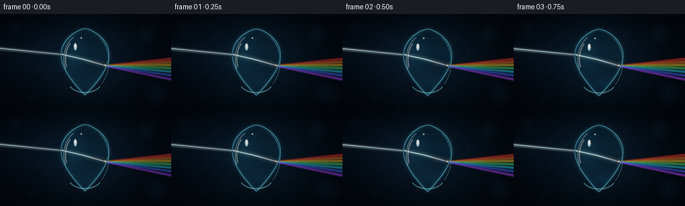
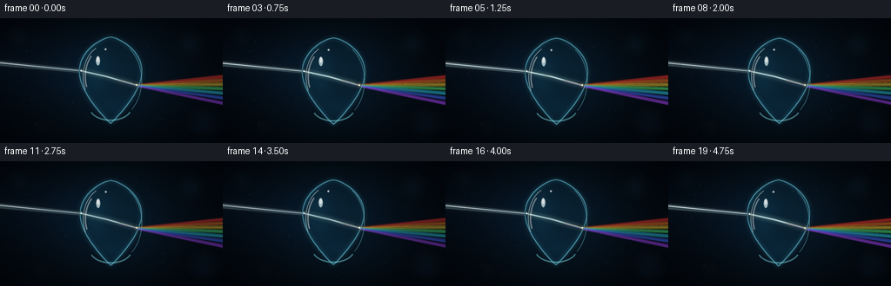
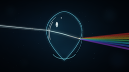

CODING AGENTS AS PIXEL WORLD MODELS
traex/GPT-5.6-Sol · phygen_088
点击播放 · 原生 RGB 像素
逐轮保存的候选
回放视频、检查图与代码变化。
每份候选均可单独播放。实际图片检查记录在下方工具轨迹中。
候选 01播放与检查图
点击播放 · 原生 RGB 像素


展开代码变化
--- 上一保存版本
+++ 本次保存版本
@@ -0,0 +1,194 @@
+from pathlib import Path
+import json, math
+import numpy as np
+from PIL import Image, ImageDraw, ImageFilter, ImageChops
+import artifact_io
+
+CASE_DIR = Path(__file__).resolve().parent
+SPEC = json.loads((CASE_DIR / 'task_spec.json').read_text())
+W, H = int(SPEC['width']), int(SPEC['height'])
+N, FPS = int(SPEC['frames']), float(SPEC['fps'])
+S = 4
+w, h = W*S, H*S
+rng = np.random.default_rng(8817)
+
+# Stable optical-dust field; motion comes from its intensity rather than random position.
+dust = [(float(rng.uniform(5, 251)), float(rng.uniform(8, 137)),
+ float(rng.uniform(.25, 1.0)), float(rng.uniform(0, 2*math.pi))) for _ in range(58)]
+bokeh = [(21, 22, 12, (16,39,53)), (218,30,16,(15,38,53)), (234,120,20,(11,27,45)),
+ (48,125,10,(15,36,48)), (187,18,7,(20,44,52)), (74,19,5,(18,38,52))]
+
+def scpt(p): return tuple(int(round(v*S)) for v in p)
+
+def make_background(frame):
+ yy, xx = np.mgrid[0:h,0:w].astype(np.float32)
+ X, Y = xx/S, yy/S
+ # Deep teal-black photographic backdrop with a halo behind the drop.
+ halo = np.exp(-(((X-130)/72)**2 + ((Y-70)/66)**2))
+ left = np.exp(-(((X-45)/112)**2 + ((Y-55)/42)**2))
+ vign = np.clip(1 - 0.42*((X-W/2)/(W*.70))**2 - 0.55*((Y-H/2)/(H*.67))**2, .40, 1)
+ grain = (np.sin(X*.31 + Y*.19) + np.sin(X*.071-Y*.37))*0.45
+ arr = np.empty((h,w,3), np.float32)
+ arr[...,0] = (3.2 + 4.6*halo + 1.4*left + grain*.16)*vign
+ arr[...,1] = (9.0 + 15.5*halo + 5.5*left + grain*.32)*vign
+ arr[...,2] = (16.0 + 22.0*halo + 10.0*left + grain*.60)*vign
+ im = Image.fromarray(np.uint8(np.clip(arr,0,255)), 'RGB').convert('RGBA')
+ # Very soft defocused background reflections.
+ soft = Image.new('RGBA',(w,h),(0,0,0,0)); d=ImageDraw.Draw(soft)
+ for x,y,r,c in bokeh:
+ d.ellipse((int((x-r)*S),int((y-r)*S),int((x+r)*S),int((y+r)*S)), fill=(*c,70))
+ soft=soft.filter(ImageFilter.GaussianBlur(7*S)); im=Image.alpha_composite(im,soft)
+ # Tiny airborne motes make the illumination read as volumetric.
+ motes=Image.new('RGBA',(w,h),(0,0,0,0)); md=ImageDraw.Draw(motes)
+ for x,y,r,ph in dust:
+ a=int(15 + 26*(.5+.5*math.sin(ph+frame*.39)))
+ rr=max(1,int(r*S)); md.ellipse((int(x*S-rr),int(y*S-rr),int(x*S+rr),int(y*S+rr)), fill=(112,181,200,a))
+ return Image.alpha_composite(im,motes.filter(ImageFilter.GaussianBlur(.35*S)))
+
+def glow_poly(base, pts, color, glow_radius=6, glow_alpha=85, fill_alpha=170):
+ shape=Image.new('RGBA',(w,h),(0,0,0,0)); sd=ImageDraw.Draw(shape)
+ sd.polygon([scpt(p) for p in pts], fill=(*color,glow_alpha))
+ halo=shape.filter(ImageFilter.GaussianBlur(glow_radius*S))
+ base=Image.alpha_composite(base,halo)
+ core=Image.new('RGBA',(w,h),(0,0,0,0)); cd=ImageDraw.Draw(core)
+ cd.polygon([scpt(p) for p in pts], fill=(*color,fill_alpha))
+ return Image.alpha_composite(base,core)
+
+def glow_line(base, pts, color, width=1.0, blur=3.0, alpha=210, glowalpha=100):
+ layer=Image.new('RGBA',(w,h),(0,0,0,0)); ld=ImageDraw.Draw(layer)
+ q=[scpt(p) for p in pts]
+ ld.line(q, fill=(*color,glowalpha), width=max(1,int(width*S*3.2)), joint='curve')
+ base=Image.alpha_composite(base,layer.filter(ImageFilter.GaussianBlur(blur*S)))
+ core=Image.new('RGBA',(w,h),(0,0,0,0)); cd=ImageDraw.Draw(core)
+ cd.line(q, fill=(*color,alpha), width=max(1,int(width*S)), joint='curve')
+ return Image.alpha_composite(base,core)
+
+def droplet_polygon(cx,cy,scale=1.0):
+ top, bottom = cy-50*scale, cy+50*scale
+ left=[]; right=[]
+ for i in range(81):
+ u=i/80
+ y=top+(bottom-top)*u
+ # Pointed crown, wide rounded belly, gently tapered foot.
+ width=38*scale*(math.sin(math.pi*(u**0.72))**0.90)
+ width*=0.91 + 0.10*u
+ left.append((cx-width,y)); right.append((cx+width,y))
+ return left + right[::-1]
+
+def render(k):
+ phase=2*math.pi*k/N
+ cy=71.5 + 1.2*math.sin(phase)
+ cx=127 + .45*math.sin(phase*.7)
+ scale=1 + .011*math.sin(phase+0.8)
+ beam_lift=.65*math.sin(phase*1.15)
+ pulse=.86+.12*math.sin(phase*1.3-.4)
+ im=make_background(k)
+
+ # Emerging spectral fan behind the drop. Continuous adjacent ribbons avoid a neon-line look.
+ origin=(157.5,77.0+beam_lift*.35)
+ spectrum=[
+ ((255,55,47), -10.0), ((255,124,38), -5.5), ((255,211,52), -.8),
+ ((74,232,113), 4.4), ((47,210,239), 9.8), ((68,107,255), 15.6), ((167,67,245), 21.8)]
+ for idx,(col,off) in enumerate(spectrum):
+ y0=origin[1] + idx*.14
+ y1=origin[1] + off
+ pts=[(origin[0]-1,y0-1.25),(260,y1-2.15),(260,y1+2.0),(origin[0]-1,y0+1.25)]
+ im=glow_poly(im,pts,col,3.6, int(55*pulse), int(112*pulse))
+ im=glow_line(im,[(origin[0],y0),(259,y1)],col,.52,2.0,int(175*pulse),int(70*pulse))
+ # A faint unrefracted-looking white center makes the before/after relationship immediate.
+ im=glow_line(im,[origin,(259,origin[1]+4.0)],(205,235,244),.40,3.8,int(70*pulse),int(45*pulse))
+
+ # Narrow incident beam: broad atmospheric cone plus bright coherent center.
+ entry=(93.2,60.5+beam_lift)
+ im=glow_poly(im,[(-8,48.2+beam_lift),(entry[0],58.6+beam_lift),(entry[0],63.0+beam_lift),(-8,54.3+beam_lift)],
+ (180,231,243),7.5,int(68*pulse),int(63*pulse))
+ im=glow_line(im,[(-4,51.0+beam_lift),entry],(230,250,252),1.12,3.0,int(225*pulse),int(105*pulse))
+ im=glow_line(im,[(-4,50.45+beam_lift),entry],(255,255,247),.28,1.0,int(250*pulse),int(80*pulse))
+
+ # Water body mask and optically distorted background.
+ poly=droplet_polygon(cx,cy,scale)
+ mask=Image.new('L',(w,h),0); ImageDraw.Draw(mask).polygon([scpt(p) for p in poly],fill=255)
+ # Magnify the backdrop under the curved droplet, preserving transparency.
+ bbox=(int((cx-42)*S),int((cy-53)*S),int((cx+42)*S),int((cy+53)*S))
+ crop=im.crop(bbox)
+ big=crop.resize((int(crop.width*1.085),int(crop.height*1.085)),Image.Resampling.BICUBIC)
+ lens=Image.new('RGBA',(w,h),(0,0,0,0))
+ lens.paste(big, (bbox[0]-(big.width-crop.width)//2,bbox[1]-(big.height-crop.height)//2))
+ im=Image.composite(lens,im,mask)
+
+ # Cool water volume: brighter left shoulder and lower caustic, darker right core.
+ yy,xx=np.mgrid[0:h,0:w].astype(np.float32); X=xx/S; Y=yy/S
+ shoulder=np.exp(-(((X-(cx-19))/19)**2+((Y-(cy-12))/35)**2))
+ lower=np.exp(-(((X-(cx+3))/35)**2+((Y-(cy+33))/15)**2))
+ shade=np.clip((X-(cx-8))/65,0,1)
+ rgba=np.zeros((h,w,4),dtype=np.uint8)
+ rgba[...,0]=np.uint8(np.clip(18+15*shoulder+8*lower,0,255))
+ rgba[...,1]=np.uint8(np.clip(88+55*shoulder+40*lower,0,255))
+ rgba[...,2]=np.uint8(np.clip(118+60*shoulder+62*lower,0,255))
+ rgba[...,3]=np.uint8(np.clip(19+23*shoulder+14*lower+18*shade,0,75))
+ water=Image.fromarray(rgba,'RGBA'); water.putalpha(ImageChops.multiply(water.getchannel('A'),mask))
+ im=Image.alpha_composite(im,water)
+
+ # Internal refracted beam visibly changes direction within the water.
+ mid=(122.0,67.0+beam_lift*.55); exitp=(157.2,77.0+beam_lift*.35)
+ internal=Image.new('RGBA',(w,h),(0,0,0,0))
+ internal=glow_line(internal,[entry,mid,exitp],(191,246,250),2.0,3.0,int(182*pulse),int(115*pulse))
+ internal=glow_line(internal,[entry,mid,exitp],(255,255,245),.50,.8,int(245*pulse),int(105*pulse))
+ internal.putalpha(ImageChops.multiply(internal.getchannel('A'),mask))
+ im=Image.alpha_composite(im,internal)
+
+ # Colored internal dispersion begins just before emergence.
+ cols=[((255,68,48),-1.8),((255,215,72),-.7),((71,235,178),.5),((61,152,255),1.7),((178,74,246),2.8)]
+ disp=Image.new('RGBA',(w,h),(0,0,0,0))
+ for col,dy in cols:
+ disp=glow_line(disp,[(136,72+dy*.15+beam_lift*.4),(157,77+dy*.38+beam_lift*.35)],col,.42,1.15,int(145*pulse),int(55*pulse))
+ disp.putalpha(ImageChops.multiply(disp.getchannel('A'),mask)); im=Image.alpha_composite(im,disp)
+
+ # Glassy contour: soft cyan outer halo, sharp silver-blue edge, dark inner rim.
+ eroded=mask.filter(ImageFilter.MinFilter(9))
+ rim=ImageChops.subtract(mask,eroded)
+ halo=Image.new('RGBA',(w,h),(75,207,238,0)); halo.putalpha(rim.filter(ImageFilter.GaussianBlur(2.2*S)).point(lambda a:int(a*.42)))
+ im=Image.alpha_composite(im,halo)
+ edge=Image.new('RGBA',(w,h),(128,225,244,0)); edge.putalpha(rim.point(lambda a:int(a*.45)))
+ im=Image.alpha_composite(im,edge)
+
+ # Hand-placed curved reflections and caustics sell the spherical water surface.
+ hi=Image.new('RGBA',(w,h),(0,0,0,0)); hd=ImageDraw.Draw(hi)
+ # Left shoulder glint
+ arcbox=(int((cx-32)*S),int((cy-41)*S),int((cx+22)*S),int((cy+32)*S))
+ hd.arc(arcbox,154,244,fill=(221,252,255,185),width=1*S)
+ hd.arc((int((cx-30)*S),int((cy-38)*S),int((cx+18)*S),int((cy+29)*S)),158,226,fill=(255,255,255,105),width=2*S)
+ # Narrow right rim reflection
+ hd.arc((int((cx-35)*S),int((cy-46)*S),int((cx+36)*S),int((cy+46)*S)), -53,48, fill=(130,230,247,130),width=1*S)
+ # Specular comma and micro-highlight
+ hd.ellipse((int((cx-17)*S),int((cy-28)*S),int((cx-12)*S),int((cy-17)*S)),fill=(232,254,255,172))
+ hd.ellipse((int((cx-15.8)*S),int((cy-27)*S),int((cx-13.2)*S),int((cy-21)*S)),fill=(255,255,255,220))
+ hd.ellipse((int((cx-7)*S),int((cy-37)*S),int((cx-4.5)*S),int((cy-34.5)*S)),fill=(240,255,255,180))
+ # Bottom crescent caustic
+ hd.arc((int((cx-25)*S),int((cy+15)*S),int((cx+25)*S),int((cy+47)*S)),22,157,fill=(132,237,248,115),width=2*S)
+ im=Image.alpha_composite(im,hi.filter(ImageFilter.GaussianBlur(.28*S)))
+
+ # Brilliant entry and exit caustic points, animated but restrained.
+ for (px,py),col,rr in [(entry,(239,255,255),2.4),(exitp,(255,245,215),2.8)]:
+ spot=Image.new('RGBA',(w,h),(0,0,0,0)); sd=ImageDraw.Draw(spot)
+ sd.ellipse((int((px-rr)*S),int((py-rr)*S),int((px+rr)*S),int((py+rr)*S)),fill=(*col,int(175*pulse)))
+ im=Image.alpha_composite(im,spot.filter(ImageFilter.GaussianBlur(2.0*S)))
+ dot=Image.new('RGBA',(w,h),(0,0,0,0)); dd=ImageDraw.Draw(dot)
+ dd.ellipse((int((px-.8)*S),int((py-.8)*S),int((px+.8)*S),int((py+.8)*S)),fill=(*col,245))
+ im=Image.alpha_composite(im,dot)
+
+ # A traveling luminous packet subtly demonstrates propagation direction.
+ q=((k*0.135)%1.0)
+ if q < .50:
+ t=q/.50; px=-3+(entry[0]+3)*t; py=(51+beam_lift)*(1-t)+entry[1]*t
+ else:
+ t=(q-.50)/.50; px=entry[0]*(1-t)+exitp[0]*t; py=entry[1]*(1-t)+exitp[1]*t
+ packet=Image.new('RGBA',(w,h),(0,0,0,0)); pd=ImageDraw.Draw(packet)
+ pd.ellipse((int((px-1.4)*S),int((py-1.4)*S),int((px+1.4)*S),int((py+1.4)*S)),fill=(255,255,245,145))
+ im=Image.alpha_composite(im,packet.filter(ImageFilter.GaussianBlur(1.2*S)))
+
+ return np.asarray(im.convert('RGB').resize((W,H),Image.Resampling.LANCZOS),dtype=np.uint8)
+
+frames=np.stack([render(i) for i in range(N)],axis=0)
+artifact_io.save(frames, CASE_DIR)
+print(f'saved {frames.shape} RGB frames at {FPS:g} fps')
可观测工具轨迹
实际执行的命令与返回图片。
命令 1exit 0
/bin/bash -lc "cat prompt.txt && printf '\\n--- GENERATION_RULES.md ---\\n' && cat GENERATION_RULES.md && printf '\\n--- task_spec.json ---\\n' && cat task_spec.json"
命令 2exit 0
/bin/bash -lc "find . -maxdepth 2 -type f -printf '%p\\n' | sort | sed -n '1,200p'"
命令 3exit 0
/bin/bash -lc "command -v ffmpeg; command -v python3; python3 - <<'PY' mods=['numpy','PIL','cv2','imageio','moviepy','moderngl','skimage'] for m in mods: try: x=__import__(m) print(m,'OK',getattr(x,'__version__','')) except Exception as e: print(m,'NO',e) PY"
命令 4exit 0
/bin/bash -lc "sed -n '1,260p' artifact_io.py"
命令 5exit 0
/bin/bash -lc "cat > generate.py <<'PY'
from pathlib import Path
import json, math
import numpy as np
from PIL import Image, ImageDraw, ImageFilter, ImageChops
import artifact_io
CASE_DIR = Path(__file__).resolve().parent
SPEC = json.loads((CASE_DIR / 'task_spec.json').read_text())
W, H = int(SPEC['width']), int(SPEC['height'])
N, FPS = int(SPEC['frames']), float(SPEC['fps'])
S = 4
w, h = W*S, H*S
rng = np.random.default_rng(8817)
# Stable optical-dust field; motion comes from its intensity rather than random position.
dust = [(float(rng.uniform(5, 251)), float(rng.uniform(8, 137)),
float(rng.uniform(.25, 1.0)), float(rng.uniform(0, 2*math.pi))) for _ in range(58)]
bokeh = [(21, 22, 12, (16,39,53)), (218,30,16,(15,38,53)), (234,120,20,(11,27,45)),
(48,125,10,(15,36,48)), (187,18,7,(20,44,52)), (74,19,5,(18,38,52))]
def scpt(p): return tuple(int(round(v*S)) for v in p)
def make_background(frame):
yy, xx = np.mgrid[0:h,0:w].astype(np.float32)
X, Y = xx/S, yy/S
# Deep teal-black photographic backdrop with a halo behind the drop.
halo = np.exp(-(((X-130)/72)**2 + ((Y-70)/66)**2))
left = np.exp(-(((X-45)/112)**2 + ((Y-55)/42)**2))
vign = np.clip(1 - 0.42*((X-W/2)/(W*.70))**2 - 0.55*((Y-H/2)/(H*.67))**2, .40, 1)
grain = (np.sin(X*.31 + Y*.19) + np.sin(X*.071-Y*.37))*0.45
arr = np.empty((h,w,3), np.float32)
arr[...,0] = (3.2 + 4.6*halo + 1.4*left + grain*.16)*vign
arr[...,1] = (9.0 + 15.5*halo + 5.5*left + grain*.32)*vign
arr[...,2] = (16.0 + 22.0*halo + 10.0*left + grain*.60)*vign
im = Image.fromarray(np.uint8(np.clip(arr,0,255)), 'RGB').convert('RGBA')
# Very soft defocused background reflections.
soft = Image.new('RGBA',(w,h),(0,0,0,0)); d=ImageDraw.Draw(soft)
for x,y,r,c in bokeh:
d.ellipse((int((x-r)*S),int((y-r)*S),int((x+r)*S),int((y+r)*S)), fill=(*c,70))
soft=soft.filter(ImageFilter.GaussianBlur(7*S)); im=Image.alpha_composite(im,soft)
# Tiny airborne motes make the illumination read as volumetric.
motes=Image.new('RGBA',(w,h),(0,0,0,0)); md=ImageDraw.Draw(motes)
for x,y,r,ph in dust:
a=int(15 + 26*(.5+.5*math.sin(ph+frame*.39)))
rr=max(1,int(r*S)); md.ellipse((int(x*S-rr),int(y*S-rr),int(x*S+rr),int(y*S+rr)), fill=(112,181,200,a))
return Image.alpha_composite(im,motes.filter(ImageFilter.GaussianBlur(.35*S)))
def glow_poly(base, pts, color, glow_radius=6, glow_alpha=85, fill_alpha=170):
shape=Image.new('RGBA',(w,h),(0,0,0,0)); sd=ImageDraw.Draw(shape)
sd.polygon([scpt(p) for p in pts], fill=(*color,glow_alpha))
halo=shape.filter(ImageFilter.GaussianBlur(glow_radius*S))
base=Image.alpha_composite(base,halo)
core=Image.new('RGBA',(w,h),(0,0,0,0)); cd=ImageDraw.Draw(core)
cd.polygon([scpt(p) for p in pts], fill=(*color,fill_alpha))
return Image.alpha_composite(base,core)
def glow_line(base, pts, color, width=1.0, blur=3.0, alpha=210, glowalpha=100):
layer=Image.new('RGBA',(w,h),(0,0,0,0)); ld=ImageDraw.Draw(layer)
q=[scpt(p) for p in pts]
ld.line(q, fill=(*color,glowalpha), width=max(1,int(width*S*3.2)), joint='curve')
base=Image.alpha_composite(base,layer.filter(ImageFilter.GaussianBlur(blur*S)))
core=Image.new('RGBA',(w,h),(0,0,0,0)); cd=ImageDraw.Draw(core)
cd.line(q, fill=(*color,alpha), width=max(1,int(width*S)), joint='curve')
return Image.alpha_composite(base,core)
def droplet_polygon(cx,cy,scale=1.0):
top, bottom = cy-50*scale, cy+50*scale
left=[]; right=[]
for i in range(81):
u=i/80
y=top+(bottom-top)*u
# Pointed crown, wide rounded belly, gently tapered foot.
width=38*scale*(math.sin(math.pi*(u**0.72))**0.90)
width*=0.91 + 0.10*u
left.append((cx-width,y)); right.append((cx+width,y))
return left + right[::-1]
def render(k):
phase=2*math.pi*k/N
cy=71.5 + 1.2*math.sin(phase)
cx=127 + .45*math.sin(phase*.7)
scale=1 + .011*math.sin(phase+0.8)
beam_lift=.65*math.sin(phase*1.15)
pulse=.86+.12*math.sin(phase*1.3-.4)
im=make_background(k)
# Emerging spectral fan behind the drop. Continuous adjacent ribbons avoid a neon-line look.
origin=(157.5,77.0+beam_lift*.35)
spectrum=[
((255,55,47), -10.0), ((255,124,38), -5.5), ((255,211,52), -.8),
((74,232,113), 4.4), ((47,210,239), 9.8), ((68,107,255), 15.6), ((167,67,245), 21.8)]
for idx,(col,off) in enumerate(spectrum):
y0=origin[1] + idx*.14
y1=origin[1] + off
pts=[(origin[0]-1,y0-1.25),(260,y1-2.15),(260,y1+2.0),(origin[0]-1,y0+1.25)]
im=glow_poly(im,pts,col,3.6, int(55*pulse), int(112*pulse))
im=glow_line(im,[(origin[0],y0),(259,y1)],col,.52,2.0,int(175*pulse),int(70*pulse))
# A faint unrefracted-looking white center makes the before/after relationship immediate.
im=glow_line(im,[origin,(259,origin[1]+4.0)],(205,235,244),.40,3.8,int(70*pulse),int(45*pulse))
# Narrow incident beam: broad atmospheric cone plus bright coherent center.
entry=(93.2,60.5+beam_lift)
im=glow_poly(im,[(-8,48.2+beam_lift),(entry[0],58.6+beam_lift),(entry[0],63.0+beam_lift),(-8,54.3+beam_lift)],
(180,231,243),7.5,int(68*pulse),int(63*pulse))
im=glow_line(im,[(-4,51.0+beam_lift),entry],(230,250,252),1.12,3.0,int(225*pulse),int(105*pulse))
im=glow_line(im,[(-4,50.45+beam_lift),entry],(255,255,247),.28,1.0,int(250*pulse),int(80*pulse))
# Water body mask and optically distorted background.
poly=droplet_polygon(cx,cy,scale)
mask=Image.new('L',(w,h),0); ImageDraw.Draw(mask).polygon([scpt(p) for p in poly],fill=255)
# Magnify the backdrop under the curved droplet, preserving transparency.
bbox=(int((cx-42)*S),int((cy-53)*S),int((cx+42)*S),int((cy+53)*S))
crop=im.crop(bbox)
big=crop.resize((int(crop.width*1.085),int(crop.height*1.085)),Image.Resampling.BICUBIC)
lens=Image.new('RGBA',(w,h),(0,0,0,0))
lens.paste(big, (bbox[0]-(big.width-crop.width)//2,bbox[1]-(big.height-crop.height)//2))
im=Image.composite(lens,im,mask)
# Cool water volume: brighter left shoulder and lower caustic, darker right core.
yy,xx=np.mgrid[0:h,0:w].astype(np.float32); X=xx/S; Y=yy/S
shoulder=np.exp(-(((X-(cx-19))/19)**2+((Y-(cy-12))/35)**2))
lower=np.exp(-(((X-(cx+3))/35)**2+((Y-(cy+33))/15)**2))
shade=np.clip((X-(cx-8))/65,0,1)
rgba=np.zeros((h,w,4),dtype=np.uint8)
rgba[...,0]=np.uint8(np.clip(18+15*shoulder+8*lower,0,255))
rgba[...,1]=np.uint8(np.clip(88+55*shoulder+40*lower,0,255))
rgba[...,2]=np.uint8(np.clip(118+60*shoulder+62*lower,0,255))
rgba[...,3]=np.uint8(np.clip(19+23*shoulder+14*lower+18*shade,0,75))
water=Image.fromarray(rgba,'RGBA'); water.putalpha(ImageChops.multiply(water.getchannel('A'),mask))
im=Image.alpha_composite(im,water)
# Internal refracted beam visibly changes direction within the water.
mid=(122.0,67.0+beam_lift*.55); exitp=(157.2,77.0+beam_lift*.35)
internal=Image.new('RGBA',(w,h),(0,0,0,0))
internal=glow_line(internal,[entry,mid,exitp],(191,246,250),2.0,3.0,int(182*pulse),int(115*pulse))
internal=glow_line(internal,[entry,mid,exitp],(255,255,245),.50,.8,int(245*pulse),int(105*pulse))
internal.putalpha(ImageChops.multiply(internal.getchannel('A'),mask))
im=Image.alpha_composite(im,internal)
# Colored internal dispersion begins just before emergence.
cols=[((255,68,48),-1.8),((255,215,72),-.7),((71,235,178),.5),((61,152,255),1.7),((178,74,246),2.8)]
disp=Image.new('RGBA',(w,h),(0,0,0,0))
for col,dy in cols:
disp=glow_line(disp,[(136,72+dy*.15+beam_lift*.4),(157,77+dy*.38+beam_lift*.35)],col,.42,1.15,int(145*pulse),int(55*pulse))
disp.putalpha(ImageChops.multiply(disp.getchannel('A'),mask)); im=Image.alpha_composite(im,disp)
# Glassy contour: soft cyan outer halo, sharp silver-blue edge, dark inner rim.
eroded=mask.filter(ImageFilter.MinFilter(9))
rim=ImageChops.subtract(mask,eroded)
halo=Image.new('RGBA',(w,h),(75,207,238,0)); halo.putalpha(rim.filter(ImageFilter.GaussianBlur(2.2*S)).point(lambda a:int(a*.42)))
im=Image.alpha_composite(im,halo)
edge=Image.new('RGBA',(w,h),(128,225,244,0)); edge.putalpha(rim.point(lambda a:int(a*.45)))
im=Image.alpha_composite(im,edge)
# Hand-placed curved reflections and caustics sell the spherical water surface.
hi=Image.new('RGBA',(w,h),(0,0,0,0)); hd=ImageDraw.Draw(hi)
# Left shoulder glint
arcbox=(int((cx-32)*S),int((cy-41)*S),int((cx+22)*S),int((cy+32)*S))
hd.arc(arcbox,154,244,fill=(221,252,255,185),width=1*S)
hd.arc((int((cx-30)*S),int((cy-38)*S),int((cx+18)*S),int((cy+29)*S)),158,226,fill=(255,255,255,105),width=2*S)
# Narrow right rim reflection
hd.arc((int((cx-35)*S),int((cy-46)*S),int((cx+36)*S),int((cy+46)*S)), -53,48, fill=(130,230,247,130),width=1*S)
# Specular comma and micro-highlight
hd.ellipse((int((cx-17)*S),int((cy-28)*S),int((cx-12)*S),int((cy-17)*S)),fill=(232,254,255,172))
hd.ellipse((int((cx-15.8)*S),int((cy-27)*S),int((cx-13.2)*S),int((cy-21)*S)),fill=(255,255,255,220))
hd.ellipse((int((cx-7)*S),int((cy-37)*S),int((cx-4.5)*S),int((cy-34.5)*S)),fill=(240,255,255,180))
# Bottom crescent caustic
hd.arc((int((cx-25)*S),int((cy+15)*S),int((cx+25)*S),int((cy+47)*S)),22,157,fill=(132,237,248,115),width=2*S)
im=Image.alpha_composite(im,hi.filter(ImageFilter.GaussianBlur(.28*S)))
# Brilliant entry and exit caustic points, animated but restrained.
for (px,py),col,rr in [(entry,(239,255,255),2.4),(exitp,(255,245,215),2.8)]:
spot=Image.new('RGBA',(w,h),(0,0,0,0)); sd=ImageDraw.Draw(spot)
sd.ellipse((int((px-rr)*S),int((py-rr)*S),int((px+rr)*S),int((py+rr)*S)),fill=(*col,int(175*pulse)))
im=Image.alpha_composite(im,spot.filter(ImageFilter.GaussianBlur(2.0*S)))
dot=Image.new('RGBA',(w,h),(0,0,0,0)); dd=ImageDraw.Draw(dot)
dd.ellipse((int((px-.8)*S),int((py-.8)*S),int((px+.8)*S),int((py+.8)*S)),fill=(*col,245))
im=Image.alpha_composite(im,dot)
# A traveling luminous packet subtly demonstrates propagation direction.
q=((k*0.135)%1.0)
if q < .50:
t=q/.50; px=-3+(entry[0]+3)*t; py=(51+beam_lift)*(1-t)+entry[1]*t
else:
t=(q-.50)/.50; px=entry[0]*(1-t)+exitp[0]*t; py=entry[1]*(1-t)+exitp[1]*t
packet=Image.new('RGBA',(w,h),(0,0,0,0)); pd=ImageDraw.Draw(packet)
pd.ellipse((int((px-1.4)*S),int((py-1.4)*S),int((px+1.4)*S),int((py+1.4)*S)),fill=(255,255,245,145))
im=Image.alpha_composite(im,packet.filter(ImageFilter.GaussianBlur(1.2*S)))
return np.asarray(im.convert('RGB').resize((W,H),Image.Resampling.LANCZOS),dtype=np.uint8)
frames=np.stack([render(i) for i in range(N)],axis=0)
artifact_io.save(frames, CASE_DIR)
print(f'saved {frames.shape} RGB frames at {FPS:g} fps')
PY
python3 generate.py
ls -lh pixels.npz inspection.png transition_check.png index.html frames/00.png"命令 6exit 0
/bin/bash -lc "python3 - <<'PY'
from pathlib import Path
import numpy as np
from PIL import Image
p=Path('.')
z=np.load('pixels.npz')['pixels']
assert z.shape==(144,256,20), z.shape
ims=np.stack([np.asarray(Image.open(f'frames/{i:02d}.png').convert('RGB')) for i in range(20)])
assert ims.shape==(20,144,256,3) and ims.dtype==np.uint8
packed=((ims[...,0].astype(np.uint32)<<16)|(ims[...,1].astype(np.uint32)<<8)|ims[...,2])
assert np.array_equal(z,packed.transpose(1,2,0))
diffs=np.mean(np.abs(np.diff(ims.astype(np.int16),axis=0)),axis=(1,2,3))
print('shape:',ims.shape,'dtype:',ims.dtype)
print('RGB range:',ims.min(),ims.max())
print('mean adjacent-frame MAE:',round(float(diffs.mean()),3),'range:',round(float(diffs.min()),3),'-',round(float(diffs.max()),3))
print('all consecutive frames distinct:',bool(np.all(diffs>0)))
for f in ['pixels.npz','index.html','inspection.png','transition_check.png','generate.py']:
print(f,Path(f).stat().st_size,'bytes')
PY"视觉工具实际返回图片 1

视觉工具实际返回图片 2

保存候选 1 份；完成命令 6 次；可验证图片返回 2 张。原始 API 响应与完整日志保留在本地。